통신설비기능장 (2002-07-21 기출문제)
1과목: 임의 과목 구분(20문항)
1. 전화케이블 공사를 도로구간에서 실시할 때에 사용되는 안전표지와 관계 먼 것은?
- 지시표지
- 위험표지
- 서행표지
- 공사안내표지
(정답률: 90%)

2. 자동교환기의 수명보전과 오동작을 방지하기 위한 교환실의 적정온도는?
- 최저 5[℃]에서 최고 15[℃] 이내
- 최저 15[℃]에서 최고 28[℃] 이내
- 최저 10[℃]에서 최고 30[℃] 이내
- 최저 25[℃]에서 최고 35[℃] 이내
(정답률: 88%)
3. 전화선로가 송배전선 등 고압의 전력 시설로부터 전력유도 방해를 받을 경우 나타나는 현상 중 잘못 된 것은?
- 자동전화 교환기의 릴레이가 동작 후 복구되지 않는다.
- 전화기의 Bell이 계속 울린다.
- 통화 전류가 증가되어 높은 소리로 통화할 수있다.
- 잡음이 증가되어 자동 전화 교환기가 오동작이 되어 고장을 야기 시킨다.
(정답률: 77%)
4. 회로시험기에서 교류전압계의 지시는?
- 최대값
- 실효값
- 평균값
- 순시값
(정답률: 86%)
5. 그림에서 스위치 S를 닫는 순간 전류는 몇 [A]인가?
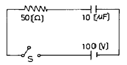
- 0
- 1.7
- 2
- 2.5
(정답률: 75%)
6. 다음은 불변전류에 의한 계전기의 동작 시간을 측정하는 측정기의 원리를 설명한 것이다. 틀린 것은?
- 사용하기 전에 Meter의 지침은 0의 눈금에 조정해 놓는다.
- 전류가 일정하면 초 시간계 지침의 기울기는 전류통과 시간에 비례한다.
- 초 시간계 눈금은 전 전기량 Q를 통과할 때 지침이 D를 지시한다.
- 눈금은 대수 눈금이며 눈금의 단위는 [sec]이다.
(정답률: 65%)
7. 다음 그림의 정3각파 전압에 대한 설명으로 맞는 것은?
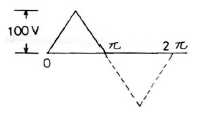
- 최대치는 200[V]이다.
- 최소치는 100[V]이다.
- 실효치는 57.7[V]이다.
- 평균치는 45[V]이다.
(정답률: 75%)
8. 높은 주파수를 사용하는 전화 케이블에서 전기저항을 점차 증가시킬 때 통화전류의 전파속도는 어떻게 변화하는가?
- 일정하다.
- 점차 느려진다.
- 점차 빨라진다.
- 경우에 따라 달라진다.
(정답률: 73%)
9. 스텝 인덱스형 광섬유에서 전반사 현상이 일어나기 위해서는 코어의 굴절률과 클래드의 굴절률과의 사이에 어떤 관계가 성립되어야 하는가?
- 두 매질의 굴절률은 같아야 한다.
- 클래드의 굴절률이 더 높아야 한다.
- 코어의 굴절률이 더 높아야 한다.
- 두 매질의 굴절률 사이에는 아무관계도 없다.
(정답률: 79%)
10. 논리회로의 결과는 어떻게 나오는가?
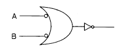
- A ⋅ B
- A + B
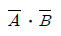
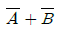
(정답률: 57%)
11. 자동 교환기에서 오접속의 원인이 아닌 것은?
- 가입자 Dial 이 불량인 경우
- 가입자 Loop 저항이 많을 경우
- 미니멈 포오즈가 다를 경우
- 통화선에 귀금속을 사용치 않을 경우
(정답률: 81%)
12. 현재 우리나라에서 사용되고 있는 “전송로 집선장치”의 설명으로서 틀린 것은?
- 모국장치와 자국장치가 있다.
- 디지털 통신방식에 해당된다.
- 96채널로 다중화시켰다.
- 원격교환 접속방식을 채택하였다.
(정답률: 63%)
13. 최번시 1시간에 생긴 전화호수가 300이고 평균보류 시간이 3분일 때 전화호량을 [HCS]로 나타내면 얼마인가?
- 360
- 450
- 540
- 630
(정답률: 50%)
14. 주파수 변조를 진폭 변조와 비교할 경우 잘못된 설명은?
- S/N 비가 개선된다.
- 에코우의 영향이 크다.
- 초단파대의 통신이 적합하다.
- 점유주파수 대역폭이 넓다.
(정답률: 42%)
15. 10[V]의 전위차로 가속된 전자가 얻는 에너지는? (단, m : 전자의 질량, e : 전자의 전하량)
- 10em[J]
- 10[eV]
- 10e/m[J]
- 10m[eV]
(정답률: 64%)
16. 374를 BCD(Binary Coded decimal)코드로 표시한 것 중 옳은 것은 어느 것인가?
- 0101 0010 1000
- 0011 0111 0100
- 1000 1010 0110
- 0100 0110 0011
(정답률: 69%)
17. 데이터(Data) 통신상에서 발생하는 오류를 검출하고 정정하는 장치는?
- 단말입출력장치
- 전송제어장치
- 통신종단장치
- 통신제어장치
(정답률: 73%)
18. 급전선(feeder-line)의 필요한 조건이라고 볼 수 없는 것은?
- 전송효율이 좋을 것
- 급전선의 파동임피던스가 적당할 것
- 유도방해를 주거나 받지 않을 것
- 송신용일 때는 절연내력이 적을 것
(정답률: 57%)
19. 정현파신호로 진폭변조한 파를 오실로스코프로 측정한 결과 그 최대진폭이 45[V]이고 최소진폭이 5[V]이었다. 변조도는 얼마인가?
- 0.6
- 0.7
- 0.8
- 0.9
(정답률: 72%)
20. 다음 중 펄스변조방식이 아닌 것은?
- PCM
- PWM
- PPM
- SSB
(정답률: 72%)
2과목: 임의 과목 구분(20문항)
21. 다음 무선수신기중 가장 널리 쓰이는 것은?
- 스트레이트 수신기
- 수퍼헤테로다인 수신기
- 리플렉스 수신기
- 단동조형 수신기
(정답률: 76%)
22. SSB 통신을 DSB 통신과 비교 할 때 그 특징이 아닌 것은?
- 페이딩의 영향이 적다.
- 점유대역폭이 1/2이다.
- 반송파가 출력에 나타나지 않는다.
- 수신기장치가 간단해진다.
(정답률: 63%)
23. ASCII 코드의 특징이 아닌 것은?
- 7비트의 정보비트로 되어 있다.
- 패리티검사를 위한 비트가 있다.
- 데이터 통신용으로 많이 쓰인다.
- 주로 산술연산에 사용되는 코드이다.
(정답률: 50%)
24. 동축케이블과 비교한 도파관의 마이크로파 전송특징이 아닌 것은?
- 도체의 오옴손실이 작다.
- 유전체손실이 작다.
- 전송전력이 작다.
- 방사손실이 작다.
(정답률: 65%)
25. 다음 중 마이크로파 중계방식에 해당되지 않는 것은?
- 집중 중계방식
- 직접 중계방식
- 헤테로다인 중계방식
- 검파 중계방식
(정답률: 46%)
26. 광섬유케이블을 심선의 구조를 설명한 내용이 내부에서 외부 쪽으로 순서대로 잘된 것은?
- 클래드 -코어 - 1차 코팅 - 2차 코팅
- 코어 -클래드 - 1차 코팅 - 2차 코팅
- 1차 코팅 - 2차 코팅 -클래드 -코어
- 1차 코어 - 1차 클래드 - 2차 코어 - 2차 클래드
(정답률: 73%)
27. 다음 파형은 선로의 각종 이상상태에 대한 반사형의 형태이다. 틀리게 짝지어진 파형은? (단, 원형펄스 )
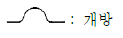
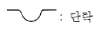
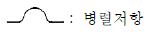
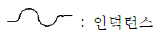
(정답률: 63%)
28. 다음 중 전화기의 보안장치와 관계없는 것은?
- 피뢰기(arrestor)
- 퓨즈(fuse)
- 열선륜(heat coil)
- 콘덴서(condenser)
(정답률: 59%)
29. 전자교환기의 구조장치 중 호를 처리하는 과정에서 호에 관계되는 정보를 일시적으로 기억하는 장치는?
- 중앙제어장치(CC)
- 주사장치(SCN)
- 호처리기억장치(CS)
- 프로그램기억장치(PS)
(정답률: 69%)
30. TV 방송화면 하단엔 문자정보을 제공하는 서비스를 무엇이라 하는가?
- Videotex
- Teletext
- Fax
- Telex
(정답률: 64%)
31. 우리나라의 전기통신은 누가 관장하는가?
- 대통령
- 국무총리
- 정보통신부장관
- 한국통신사장
(정답률: 44%)
32. 트랙픽 이론에서 호손율 B와 접속율 C의 상호관계는?
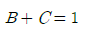
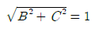
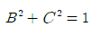
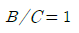
(정답률: 60%)
33. 길이가 긴 섬유를 따라 도파된 광펄스의 모양이 펄스의 폭도 커지게 되어서 이웃하는 펄스와 서로 겹침으로써 광섬유의 전송용량을 제한하게 되는 현상을 무엇이라 하는가?
- 누설특성
- 간접특성
- 분산특성
- 도파특성
(정답률: 38%)
34. 강전류 전선은 몇 볼트 이상의 전력을 송전하거나 배전하는 전선을 말하는가?
- 100볼트
- 220볼트
- 300볼트
- 600볼트
(정답률: 56%)
35. 전화를 걸려고 전화기의 송수화기를 들었더니 “딱딱딱··”하는 소리만 계속 들리고 발신음이 들리지 않는다. 이 경우 주로 어떤 고장인가?
- 케이블 내에 침수되었다.
- 가입자선로의 루프저항이 과다하다.
- 케이블 내에 LPG 가스가 가득 찼다.
- 교환기의 라인스위치가 고장 났다.
(정답률: 68%)
36. 발진회로의 항온조에 사용되지 않는 소자는?
- bimetal
- thermister
- thyrister
- 수은온도계 접점
(정답률: 44%)
37. 다음은 무선통신에서 많이 이용되는 전리층에 관한 설명이다. 적합하지 않은 내용은?
- 전리층은 태양으로부터 방사되는 자외선, X-선에 의해 대기의 상태가 이온화된 상태이다.
- 지상 50[km]~400[km] 사이에 형성된다.
- 높이에 따라 D, E, F층으로 구분된다.
- 제일 높은 곳에 D층이 형성되며, 전자밀도가 가장 크다.
(정답률: 59%)
38. 역L형 공중선의 수평부 작용 중 옳은 것은?
- 복사저항을 증가시킨다.
- 실효고를 증가시킨다.
- 페이딩(fading)을 감소시킨다.
- 지표파를 강하게 한다.
(정답률: 50%)
39. 증폭회로에서 중화회로를 사용하는 이유로 가장 적합한 것은?
- 출력신호가 입력측으로 궤환되어 일으키는 자기발진을 방지하기 위하여
- 전력증폭기의 부하변동에 의한 영향이 뒷단에 미치지 않기 위하여
- 증폭회로에서 부가되는 잡음의 영향을 감소하기 위하여
- 증폭회로의 출력과 뒷단의 임피던스 정합을 위하여
(정답률: 70%)
40. FDM 다중화 신호계위에서 1 MG(mastergroup)은 몇 통화로[CH]로 구성되는가?
- 12
- 60
- 300
- 900
(정답률: 58%)
3과목: 임의 과목 구분(20문항)
41. TDM 다중화 신호계위인 DS1은 몇 CH로 구성 되는가?
- 12
- 24
- 36
- 92
(정답률: 50%)
42. 광섬유의 재료 흡수손실 중 가장 큰 요인은?
- Fe
- Co
- Mn
- OH-
(정답률: 55%)
43. 광섬유의 손실, 광섬유의 접속손실, 광섬유의 거리를 측정할 수 있는 계측기는?
- O.T.D.R
- 광원ㆍ광력계
- 광스펙트럼 분석기
- Mode scrambler
(정답률: 81%)
44. 오실로스코프의 x축에 2[kHz]의 교류전압을 인가하는 동시에 y축에 4[kHz]의 교류전압을 인가하였던바, 그림과 같은 파형이 나타났다고 하면 이 2개 전압 사이의 위상차는?
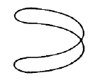
- 30°의 위상차
- 45°의 위상차
- 60°의 위상차
- 90°의 위상차
(정답률: 37%)
45. CATV 시스템의 가장 핵심적인 부분을 차지하는 장치는?
- 헤드엔드
- 교환장치
- 단말장치
- 전송로
(정답률: 60%)
46. OSI 에서 규정하는 데이터 통신 모델은 몇 계층으로 나누어져 있는가?
- 5계층
- 7계층
- 9계층
- 10계층
(정답률: 87%)
47. LAN과 LAN을 연결하는 범용적인 장비로서, 하드웨어와 프로토콜 등이 각각 다른 LAN을 연결해 줌으로서 LAN의 거리를 확장시키는 장비는?
- 리피터(Repeater)
- 브릿지(Bridge)
- 라우터(Router)
- 게이트웨이(Gateway)
(정답률: 67%)
48. 다음은 CCP케이블에 대해서 설명한 것이다. 설명이 틀린 것은?
- 심선의 색을 구별해서 케이블 접속에서는 같은색끼리 접속해야한다.
- 심선의 대조작업이 필요하다.
- 심선 절연물의 강도가 강하다.
- 방습성과 내후성이 좋다.
(정답률: 53%)
49. 다음은 전송제어의 순서이다. 바른 순서로 된 것은?
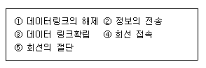
- ②-③-①-④-⑤
- ③-④-②-①-⑤
- ④-②-③-①-⑤
- ④-③-②-①-⑤
(정답률: 57%)
50. 주파수 대역폭이 30[kHz]이고, S/N비가 3인 채널을 통하여 전송할 수 있는 통신용량은?
- 36,000[bps]
- 60,000[bps]
- 90,000[bps]
- 120,000[bps]
(정답률: 53%)
51. 광섬유케이블의 특징이 아닌 것은?
- 대역폭이 넓다.
- 보안성이 우수하다.
- 전기적인 잡음에 강하다.
- 단거리 통신에 유리하다.
(정답률: 60%)
52. 광케이블 심선 접속 장비가 아닌 것은?
- 케이블 작키
- 광섬유 절단기
- 와이어 스트립퍼
- 광섬유 융착 접속기
(정답률: 54%)
53. 케이블을 절연 접속하는 가장 중요한 목적은?
- 화학적인 부식을 방지하기 위하여
- 누설 지(地)전류를 차단하기 위하여
- 낙뢰로 인한 피해를 방지하기 위하여
- 납땜을 절약하기 위하여
(정답률: 77%)
54. 다음 중 정보통신 시스템의 구성요소 중 데이터 처리계에 해당하는 것은?
- 모뎀
- 중앙처리장치
- 신호변환장치
- 통신회선
(정답률: 53%)
55. 공급자에 대한 보호와 구입자에 대한 보증의 정도를 규정해 두고 공급자의 요구와 구입자의 요구 양쪽을 만족하도록 하는 샘플링 검사방식은?
- 규준형 샘플링 검사
- 조정형 샘플링 검사
- 선별형 샘플링 검사
- 연속생산형 샘플링 검사
(정답률: 64%)
56. 표는 어느 회사의 월별 판매실적을 나타낸 것이다. 5개월 이동평균법으로 6월의 수요를 예측하면?
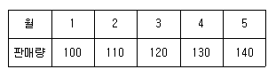
- 150
- 140
- 130
- 120
(정답률: 48%)
57. u 관리도의 공식으로 가장 올바른 것은?
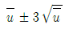
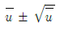
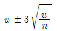
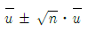
(정답률: 69%)
58. 도수분포표를 만드는 목적이 아닌 것은?
- 데이터의 흩어진 모양을 알고 싶을 때
- 많은 데이터로부터 평균치와 표준편차를 구할 때
- 원 데이터를 규격과 대조하고 싶을 때
- 결과나 문제점에 대한 계통적 특성치를 구할 때
(정답률: 37%)
59. 설비의 구식화에 의한 열화는?
- 상대적 열화
- 경제적 열화
- 기술적 열화
- 절대적 열화
(정답률: 48%)
60. 모든 작업을 기본동작으로 분해하고 각 기본동작에 대하여 성질과 조건에 따라 정해놓은 시간치를 적용하여 정미시간을 산정하는 방법은?
- PTS법
- WS법
- 스톱워치법
- 실적기록법
(정답률: 58%)